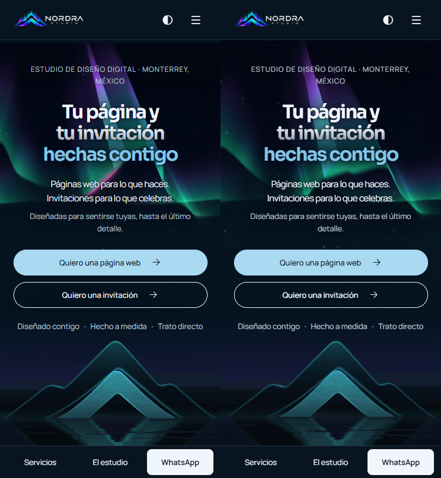

Comparación local con d203104. El visitante ve primero el póster. Tras la carga y dos oportunidades de pintado, el navegador programa la comprobación de WebGL2 y la importación en un período ocioso. En oscuro la escena retoma la cámara y la pose nocturna en el segundo 24, con el pulso en su cresta. Las pistas de memoria o CPU ausentes no impiden el intento.
Chrome a 375 × 812, con entrada táctil, DPR emulado 2,625, cuatro hilos y 4 GB de memoria declarada. Medianas de cuatro navegaciones por compilación y velocidad, con contextos nuevos y orden alternado. El LCP corresponde al póster. El comienzo de la animación es el instante en que se muestra la escena preparada. En la primera carga normal medida la escena apareció a los 1160 ms. Se contaron los cuadros dibujados en pantalla y sus intervalos, incluidos los retrasos de la GPU. La versión de referencia no descargaba Three ni mostraba cuadros WebGL.
| CPU | LCP base → ahora | Animación desde navegación | FPS | p95 entre cuadros |
|---|---|---|---|---|
| 1× | 110 → 130 ms | 355 ms | 60,0 | 16,85 ms |
| 4× | 226 → 214 ms | 1242 ms | 60,0 | 16,90 ms |
Cargas individuales y tiempos de descarga. El teléfono capaz ahora descarga 146,07 kB gzip de Three.js y 17,51 kB gzip del módulo del paisaje (163,58 kB en total). En las ocho cargas capaces medidas, la solicitud del módulo comenzó después del LCP. Los teléfonos con ahorro de datos, movimiento reducido, pausa, memoria inferior a 3 GB, menos de cuatro hilos o sin WebGL2 conservan el póster.

Se fijó el pulso al 100 % y se tomaron los mínimos sobre los interiores de las letras en 95 combinaciones de deriva y posición del pulso por idioma en oscuro. En claro la aurora no emite luz. La protección adicional queda limitada al acento del titular sobre la escena móvil activa.
| Vista | Titular | Acento | Subtítulo | Detalle | Botones |
|---|---|---|---|---|---|
| ES · oscuro | 7,05 | 5,08 | 5,45 | 7,95 | 12,36 |
| ES · claro | 11,59 | 4,63 | 11,45 | 4,71 | 12,32 |
| EN · oscuro | 8,89 | 5,92 | 5,48 | 10,89 | 12,36 |
| EN · claro | 11,67 | 4,61 | 11,48 | 4,81 | 12,13 |
Datos y posición de cada mínimo.
El perfil móvil limita el DPR a 1,5 y el búfer principal a 1,1 millones de píxeles. El reflejo utiliza una escala de 0,30 y la bruma del lago se interpola sobre una malla de 12 × 144 celdas. Una primera ventana activa de dos segundos con p95 mayor que 22 ms reduce el DPR a 1 y el reflejo a 0,18. Una segunda ventana lenta detiene la animación y libera el contexto tras el fundido.
La prueba con cuadros deliberadamente retrasados verificó la recuperación en calidad reducida y el regreso al póster, con el contexto WebGL liberado. Se comprobó en ambas rutas que dejan de dibujarse cuadros al pausar, con movimiento reducido, fuera de pantalla y al simular el evento de pestaña oculta. En un intento separado con dos pestañas reales de la misma ventana, Chrome bajo automatización mantuvo document.hidden en falso, por lo que esa transición nativa quedó sin confirmar. Al reanudar se dibujan cuadros de nuevo. No había un Android real conectado para una prueba física. Las cifras corresponden al Chrome emulado de este equipo.
Pasaron typecheck, 260 + 36 pruebas, las comprobaciones de Posada, build y check:build. Commits locales 7a932e5, 3af2c7a y 5a6e5f8.